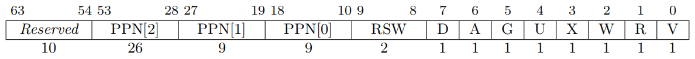
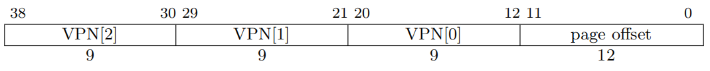
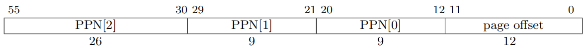
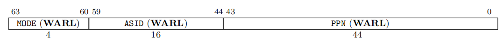

RISCV虚拟内存管理¶
虚拟内存管理的主要单元是MMU,这里对RISCV官方spec中提到的S模式虚拟内存管理做一下总结。内容依据RISCV privileged ArchitectureV1.12
RISCV的S模式使用分页机制来管理内存，可以支持Sv32,Sv39等多种分页方式，这里以Sv39举例来进行分析
同时，这里不对H扩展涉及的内容做介绍
设计描述¶
实现原理¶
RISCV使用分页机制来进行内存管理，分页机制的核心在于多级页表。多级页表，通过将虚拟地址划分为多个index, 从而使得页表之间不需要连续，这样页表的存放就会灵活。同时，当软件需要的虚拟地址空间很小时，这将大大节省页表对内存的占用。
页和页表和页表项¶
Sv39将一个物理页设计为4KB，我们可以认为这是虚拟地址管理的最小单位。 页表，是页表项组成的一个表，页表项（pte）中主要存放的是物理页地址。

PPN是指物理页号，这里我们可以把PPN[2] ~ PPN[0]理解为物理页的基地址，这已经占用了44bit的空间，为了一些权限管理，又添加了一些标志位，这些标志在最后将会再详细描述。
既然在物理地址上进行了页的划分，那么我们是不是能尽可能的在这一页中来设计尽可能多的页表表项呢，这样的好处是页表本身也占一个物理页，管理方便。显然，一个页表项32bit是不够的，为了对齐，那么一个页表项应该占用64bit。这样在一个4KB的页表中，只能存放512个页表项，因此在虚拟地址中的VPN(虚拟页表项号)需要9bit。
虚拟地址¶
所谓Sv39也就是只用了39bit来表示地址空间，这已经高达512GB了，足够使用。，VPN即为虚拟页号，可以看出分了3级。从对于页表项的分析中就已经了解到，每一级页表需要9bit的index来查找。

这样，对于一个给定的虚拟地址，都可以通过这三个VPN对应到一个具体的PTE上，PTE中存放了物理页号，这样就完成了一个虚拟页到物理页的对应。
那么分级的好处体现在哪里？从全部映射的角度来看，分级花费了更多的内存空间，即将VPN[2], VPN[1], VPN[0]合并成一个大的27bit的VPN，页表占用的空间最小。但这最大的缺点在于要求页表地址连续。实际上，没有全映射这种应用。很有可能一个64bit的CPU只搭配了一个2G的物理内存，加上其他外设地址空间，也不会太大。这种情况下就体现了分级的好处，可以做到按需分配，拒绝浪费。
物理地址¶

物理地址没有太多需要解释的，但它也划分了三级物理页号的意义是什么呢？
个人认为，这是为了巨页而设计的，它体现在IC实现上，当PPN[2]即为叶子节点时，那么PPN[1] = VPN[1], PPN[0] = VPN[0]
satp寄存器¶

satp寄存器指向了初级页表，并且它控制了MMU的开启和管理方案。ASID与TLB有关，软件可以给不同进程分配不同的ASID, 更具体的会在TLB章节中描述
关于satp寄存器的写入逻辑
Volume II: RISC-V Privileged Architectures V1.12-draft Note that writing satp does not imply any ordering constraints between page-table updates and subsequent address translations. If the new address space’s page tables have been modified, or if an ASID is reused, it may be necessary to execute an SFENCE.VMA instruction (see Section 4.2.1) after writing satp Not imposing upon implementations to flush address-translation caches upon satp writes reduces the cost of context switches, provided a sufficiently large ASID space.
通过描述来看，指令集架构没有约束写入satp后，芯片要进行tlb_flush操作，这里建议不强制加入 tlb_flush,以加速上下文切换，需要时应该使用sfence.vma来刷新tlb。但实际上由于无法对软件做约束， 很多厂商选择在写入satp时主动flush TLB
除此之外，虽然satp是一个S态寄存器，但没有规定U和M模式不可以写入
转换过程¶
略
MMU的启动条件¶
- CPU不处于M态
- satp寄存器中使能了MMU
模拟器实现¶
页表查找过程很适合递归
细节描述¶
sfence.vma¶
虚拟地址屏障指令,需要注意sfence.vma和tlb flush不完全一样，sfence.vma可以根据参数来确定具体行为
sfence.vma 执行会受到一些状态的影响
- 不在S态时，将会触发非法指令异常，这很容易理解，毕竟是S模式的指令
- 当mstatus中的TVM位置位时，将会产生非法指令异常，这是一种阻断机制
pte中的标志位¶
- V: 标识pte是否有效
- RWX: 读、写、执行权限位，这需要根据access类型来判定，如果这三者均为0，则这个表项所对应的是下一级页表，不然的话，这就是页表的叶子节点，很显然，如果PPN[2]或者PPN[1]如果指向了一个叶子节点，那么就会有比4KB更大的页出现。如果权限不够就会触发异常，fetch/load/store page-fault exception将会根据不同标识位触发。可W的页必须标记为可R
- U: user模式访问标识，user模式只能访问U标识的页，并且在sstatus中的SUM没有置位的情况下，S模式不能访问U标识页。即便SUM置位，S模式也不能执行U标识的页。为啥没有提M模式？M模式不启用MMU
- G: G标识与TLB有关，它标识页是全局的，比如linux内核，这样能够提高TLB的利用效率，这个会和ASID一样，在TLB章节中讲述
- A: access标识，自从上次被清掉之后，对应物理页是否有被读/写/执行
- D: dirty标识，自从上次被清掉之后，对应物理页有没有被写
- RSW: 保留给软件，硬件会忽略，linux内核用了吗？
关于A和D的使用，手册中有两个方案，模拟器中选择了后者
Two schemes to manage the A and D bits are permitted: • When a virtual page is accessed and the A bit is clear, or is written and the D bit is clear, a page-fault exception is raised. • When a virtual page is accessed and the A bit is clear, or is written and the D bit is clear, the implementation sets the corresponding bit(s) in the PTE. The PTE update must be atomic with respect to other accesses to the PTE, and must atomically check that the PTE is valid and grants sufficient permissions. The PTE update must be exact (i.e., not speculative), and observed in program order by the local hart. Furthermore, the PTE update must appear in the global memory order no later than the explicit memory access, or any subsequent explicit memory access to that virtual page by the local hart. The ordering on loads and stores provided by FENCE instructions and the acquire/release bits on atomic instructions also orders the PTE updates associated with those loads and stores as observed by remote harts. The PTE update is not required to be atomic with respect to the explicit memory access that caused the update, and the sequence is interruptible. However, the hart must not perform the explicit memory access before the PTE update is globally visible.
关于A/D位的详细用法，后续还应该补充
最终的物理地址的计算¶
如果VPN[2] 或 VPN[1] 对应的页是叶子节点，那么就会产生比4KB更大的页，这时，对于最终物理地址的计算，就要将 VPN 和 PPN 进行对应
If i > 0, then this is a superpage translation and pa.ppn[i ⟩ 1 : 0] = va.vpn[i ⟩ 1 : 0].
多处理器的地址缓存一致性¶
sfence.vma 仅影响执行当前指令的 hart 的地址转换硬件。当 hart 更改了另一个 hart 正在使 用的页表时,前一个 hart 必须用处理器间中断来通知后一个hart,他应该执行 sfence.vma 指令。这个过程通常被称为 TLB 击落(shutdown)。
那这个过程到底是如何实现的呢？ 将来单开一个章节来描述